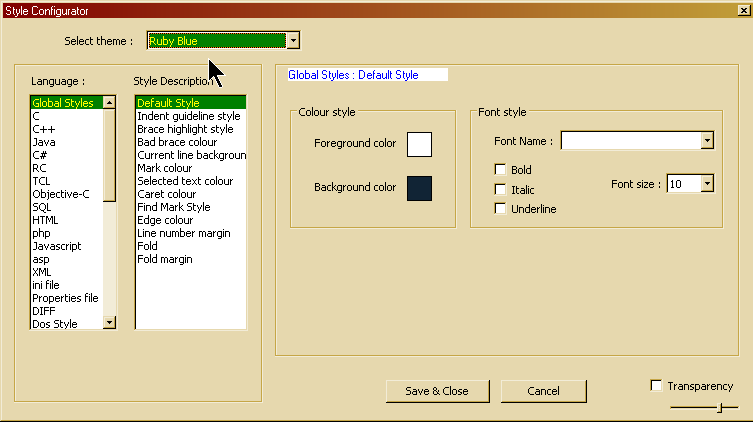
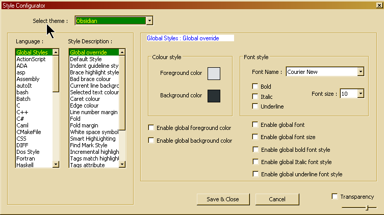

Styler Configurator
The
styler configurator is primarily used to control the appearance of
the text in Notepad++, but it also allows you to tweak some of the
other aspects that have a user configurable color.

The styler
configurator has two lists. The left list (Language) contains all the
languages that can be styled, as well as other items with some color setting:
- Global Styles: controls the user interface colors.
- Search results: The text of the Search results window
- Change markers: vertical bars that mark lines that have changed in a document since the last time it was loaded.
- DOS style: Highlighting text as if displayed on a command.vom/cmd.exe shell window.
The list on the right
(Style) has all the configurable styles for the selected language.
For
most languages it is straightforward what each property does, so only
the global setup and the exceptions are mentioned here.
- Validation:
-
Save
& Close: Store all style information and close the dialog.
-
Cancel:
Revert any changes made and close the dialog. Same as closing the
dialog.
- Dialog options:
-
Transparency
enable transparent dialog. The slider controls the amount of
transparency. Note that transparency is only available on Windows
2000 and later.
- Style themes:
- A style theme is a complete collection of style properties (see below), foa all languages and global settings. At any given time, one theme is active, and you can change it at any time using the dropdown list at the top of the dialog.
- Style properties:
- All styles have some properties assigned to them. Som
styles have properties that others do not have, such as a background
color. If a property is not available it is simply greyed out.
- Colors:
- Clicking
on the color box shows a popup with a few default colors. Clicking on
those will change the color to that. Click More Colours... to
manually specify a color. Either color can be rightclicked upon, if enabled, to
leave the color property 'blank'. The style will then use the default
color instead.
-
Foreground
color: The 'main' color. For text this is the color of the
characters.
- Background color: For text this is the background 'filler' color.
- Fonts:
-
Font
Name: The font to use when drawing the text. Leave blank to use the
default.
- Font
size: Size of the font (in points) to use when drawing text. Leave
blank to use the default.
- Bold:
Check if you want to use bold text.
- Italic:
Check if you want to use italic text.
- Underline:
Check if you want to use underlined text.
If
a regular language is selected, two edit controls are shown:
-
Default
ext.: default file extensions associated with this language. If a
file is opened with that extension, Notepad++ will switch to that
language.
- User
ext.: user definable list of extensions (space separated).
When
a style is selected that has special keywords assigned to it,
selecting that style will also display two extra edit controls:
-
Default
keywords: These are the keywords used by default of the given
language.
- User
Define keywords: These are (space separated) keywords you can enter
yourself to supplement the default ones.
The
style will then only be applied if a word in the text equals to the
keywords (variations can occur depending on the language, because
syntax can be different).
Special languages:
Global
Styles: (default styles + user interface styles)

- Global
Override
- This style can override every single other style, and
has a few options beside the default style properties. Each checkbox
below the default styling options specifies what global property to
apply. If a property is blank the style will not be applied (however
bold, italic and underline do globally disable those properties if
unchecked but enabled).
- Default
Style
- Default style properties to base other styles on. Leaving
properties blank results in undefined behavior.
- Indent
Guideline
- Colors to use for the indent guideline. The
guideline is made of alternating colors, these can be specified using
the fore- and background color options.
- Brace
Highlight Style
- Highlighted braces use this style. All properties
can be adjusted.
- Bad
brace colour
- If brace highlighting fails because no matching
brace can be found, the brace is drawn with this style.
- Current
line background colour
- Control the background color of the active
line highlight if it is enabled. Cannot be set to blank value.
- Selected
text colour
- Color of the background of selected text. Cannot be
set to blank value.
- Caret
colour
- Color of the caret. Cannot be set to blank value.
- Edge
colour
- Color of the vertical edge. Cannot be set to blank value.
- Line
number margin
- Controls the style of the line number margin. All
properties can be adjusted. This also controls the background of the
bookmark margin.
- Fold
- Controls the color of the fold indicators (not the margin
itself). Cannot be set to blank values.
- Fold
Margin
- Controls the colors of the fold margin background. Fore-
and background color alternate in a checkerboard pattern with each
pixel.
- White
space symbol
- Controls the foreground color of whitespace. This is
only visible if the drawing of whitespace characters is enabled or
any style that is applied to whitespace is set to underlined. Cannot
be set to blank value.
- Smart
Highlighting;
- When enabled, applies to all occurrences of the text beeing selected.
- Mark style #
- # is between 1 and 5. This setting will define the highlighting used in conjunction with
- Find
Mark Style;
- When Style token found is checked on the Find dialog, and the Find all is executed, applies to all occurrences of matched pattern.
- Incremental
highlight all;
- Applies when incremental search is in progress.
- Tags
match highlighting;
- When enabled, applies to the tags that match.
- Tags
attribute
- Controls the background color used for said property.
Cannot be set to blank value.
- Active
tab focused
- Determines the color used fore the line (if enabled)
drawn on the active tab of the active view. Cannot be set to blank
value.
- Active
tab unfocused
- Determines the color used fore the line (if
enabled) drawn on the active tab of the inactive view. Cannot be set
to blank value.
- Active
tab text
- Foreground color of the text for an active tab. Cannot
be set to blank value.
- Inactive
tabs
- Foreground color controls the color of the text of inactive
tabs. Background color controls the color that is used to fill the
tab with if inactive tabs, if drawing of inactive tabs is enabled.
Search
result
Controls
the appearance of search results when shown in the search results window:
- Default:
- All text in the window which is not highlighted uing another style
- Search Header
- The topmost line, wich shows the search pattern, number of files and number of hits
- File Header
- Shows the file name and number of hits on that file
- Line Number
- Clickable line numbers which lead straight to the match
- Hit Word
- The match itself
- Selected Line
- Any selected text
- Current line background colour
- How this line shows. Right click the color to suppress this highlighting.
Change markers
There come in two flavours:
- Change - saved
- Change - not savd
For each of them, the background color can be set.
Dos Style
The
Dos language uses a special font called MSLINEDRAW to enable
“box-art” for files written in the old Dos codepage. You can only
control the fore- and background color of the text (applied to all
the text). The font properties are derived from the default style
(with the exception of the font name, which is always MSLINEDRAW).